29
This menu lists all commands related to image processing, including point operations, filters, and arithmetic operations between multiple images [104]. The image will be used in most of the illustrations of this section.
29.1
Blurs the active image or selection. This filter replaces each pixel with the average of its 3 × 3 neighborhood.
29.2
Increases contrast and accentuates detail in the image or selection, but may also accentuate noise. This filter uses the following weighting factors to replace each pixel with a weighted average of the 3 × 3 neighborhood:
− 1 − 1 − 1 − 1 12 − 1 − 1 − 1 − 1
29.3
Uses a Sobel edge detector to highlight sharp changes in intensity in the active image or selection. Two 3 × 3 convolution kernels (shown below) are used to generate vertical and horizontal derivatives. The final image is produced by combining the two derivatives using the square root of the sum of the squares.
1 2 1 1 0 − 1 0 0 0 2 0 − 2 − 1 − 2 − 1 1 0 − 1
29.4
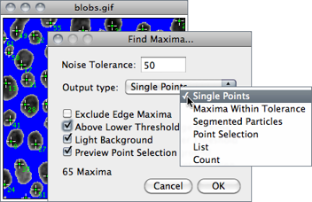
Determines the local maxima in an image and creates a binary (mask-like) image of the same size with the maxima, or one segmented particle per maximum, marked [29]. Analysis is performed on the existing rectangular selection or on the entire image if no selection is present.
For RGB images, maxima of luminance are selected, with the luminance defined as weighted or unweighted average of the colors depending on how Weighted RGB to Grayscale Conversion is set in .
Noise Tolerance Maxima are ignored if they do not stand out from the surroundings by more than this value (calibrated units for calibrated images). In other words, a threshold is set at the maximum value minus noise tolerance and the contiguous area around the maximum above the threshold is analyzed. For accepting a maximum, this area must not contain any point with a value higher than the maximum. Only one maximum within this area is accepted.
Output Type Can be (see outputs↓):
-
Single Points Results in one single point per maximum.Maxima Within Tolerance All points within the Noise Tolerance for each maximum.Segmented Particles Assumes that each maximum belongs to a particle and segments the image by a watershed algorithm applied to the values of the image (in contrast to , which uses the Euclidian distance map — EDM[?]). See for EDM-based segmentation of binary images.Point Selection Displays a multi-point selection with a point at each maximum.List Displays the XY coordinates of each maximum in the Results window.Count Displays the number of maxima in the Results window.
Exclude Edge Maxima Excludes maxima if the area within the noise tolerance surrounding a maximum touches the edge of the image (edge of the selection does not matter).
Above Lower Threshold (Thresholded images only) Finds maxima above the lower threshold only. The upper threshold of the image is ignored. If Segmented Particles is selected as Output Type, the area below the lower threshold is considered a background. This option cannot be used when finding minima (image with light background and inverted LUT).
Light Background To be checked if the image background is brighter than the objects to be found, as it is in the Cell Colony image in the illustration below.
Output is a binary image, with foreground 255 and background 0, using an inverted or normal LUT depending on the Black Background option in (see 23: Interpreting Binary Images↓).
The number of particles (as obtained by ) in the output image does not depend on the selected Output Type. Note that Segmented Particles will usually result in particles touching the edge if Exclude Edge Maxima is selected. Exclude Edge Maxima applies to the maximum, not to the particle.
does not work on stacks, but the FindStackMaxima macro runs it on all the images in a stack and creates a second stack containing the output images. The FindMaximaRoiManager macro demonstrates how to add particles found by to the
|
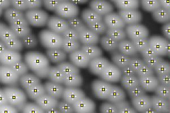
|
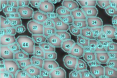
|
| Points at maxima (Multi-point selection) | Segmented Particles (ROIs obtained with AnalyzeAnalyze Particles…↓) |
29.5
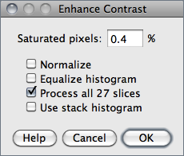
Enhances image contrast by using either histogram stretching or histogram equalization. Both methods are described in detail in the Hypermedia Image Processing Reference[?] — Contrast Stretching and Histogram Equalization.
This command does not alter pixel values as long as Normalize, Equalize Histogram or Normalize All n Slices (in the case of stacks) are not checked.
Saturated Pixels Determines the number of pixels in the image that are allowed to become saturated. Increasing this value will increase contrast. This value should be greater than zero to prevent a few outlying pixel from causing the histogram stretch to not work as intended.
Normalize If checked, ImageJ will recalculate the pixel values of the image so the range is equal to the maximum range for the data type, or 0--1.0 for float images. The contrast stretch performed on the image is similar to the ‘Auto’ option in the window, except that with stacks, each slice in the stack is adjusted independently, according to the optimal for that slice alone (if Use Stack Histogram is unchecked). The maximum range is 0--255 for 8-bit images and 0--65535 for 16-bit images.
With stacks another checkbox, Normalize All n Slices, is displayed. If checked, normalization will be applied to all slices in the stack. Note that normalization of RGB images is not supported, and thus this option will not be available on RGB stacks.
With stacks another checkbox, Normalize All n Slices, is displayed. If checked, normalization will be applied to all slices in the stack. Note that normalization of RGB images is not supported, and thus this option will not be available on RGB stacks.
Equalize Histogram If checked, ImageJ will enhance the image using histogram equalization [30]. Create a selection and the equalization will be based on the histogram of that selection. Uses a modified algorithm that takes the square root of the histogram values. Hold Alt to use the standard histogram equalization algorithm. The Saturated Pixels and Normalize parameters are ignored when Equalize Histogram is checked.
Use Stack Histogram If checked, ImageJ will use the overall stack histogram instead of individual slice histograms, that allow optimal adjustments for each slice alone. This option may be specially relevant when performing enhancements based on a ROI.
29.6
RandomJ (Binomial, Exponential, Gamma, Gaussian, Poisson and Uniform) a Java package for image randomization by Erik Meijering
29.6.1
Adds random noise to the image or selection. The noise is Gaussian (normally) distributed with a mean of zero and standard deviation of 25.
29.6.2
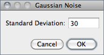
Adds Gaussian noise with a mean of zero and a chosen standard deviation.
29.6.3
Adds salt and pepper noise to the image or selection by randomly replacing 2.5% of the pixels with black pixels and 2.5% with white pixels. This command only works with 8-bit images.
29.6.4
This is a median filter. It replaces each pixel with the median value in its 3 × 3 neighborhood. This is a time consuming operation because, for each pixel in the selection, the nine pixels in the 3 × 3 neighborhood must be sorted and the center pixel replaced with the median value (the fifth). Median filters are good at removing salt and pepper noise.
29.6.5
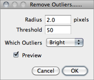
Replaces a pixel by the median of the pixels in the surrounding if it deviates from the median by more than a certain value (the threshold). Useful for correcting, e.g., hot pixels or dead pixels of a CCD camera.
Radius Determines the area (uncalibrated, i.e., in pixels) used for calculating the median. Run to see how radius translates into an area.
Threshold Determines by how much the pixel must deviate from the median to get replaced, in raw (uncalibrated) units.
Which Outliers Determines whether pixels brighter or darker than the surrounding (the median) should be replaced.
29.6.6
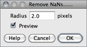
This filter replaces NaN (Not-a-Number) pixels in 32-bit (float) images by the median of the neighbors inside the circular kernel area defined by Radius [31]. It does not remove patches of NaNs larger than the kernel size, however.
Note that some ImageJ filters, such as , , and destroy the surrounding of NaN pixels by setting it also to NaN. Other filters may produce invalid results in the position of NaN pixels.
NaNs.txt, a macro that demonstrates how to create, count and remove NaNs
29.7
Commands in this submenu produce a shadow effect, with light appearing to come from a direction corresponding to the command name (, , , , , , and ). The commands use Convolve 3 × 3, ImageJ’s 3 × 3 convolution function. The command uses all eight kernels to demonstrate the speed of Convolve 3 × 3. The illustration below shows four of the convolution kernels.
29.8
This submenu contains commands that create or process binary (black and white) images. They assume that objects are black and background is white unless Black Background is checked in the dialog box (see 23: Interpreting Binary Images↓).
29.8.1
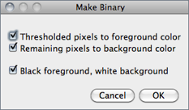
Converts an image to black and white. If a threshold has been set using the tool, the depicted dialog is displayed. The value of the Black foreground, white background checkbox reflects and sets the global Black Background value of
If a threshold has not been set, will analyze the histogram of the current selection, or of the entire image if no selection is present, and set an automatic threshold level to create the binary image (‘Auto-thresholding’ is displayed in the Status bar, cf. ).
With stacks the dialog box is displayed. Note that for non-thresholded images and stacks and behave similarly.
29.8.2
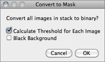
Converts an image to black and white.
The mask will have an inverting LUT (white is 0 and black is 255) unless Black Background is checked in the dialog box. If a threshold has not been set, automatic threshold levels will be calculated (cf. ). Note that for non-thresholded images and stacks and behave similarly.
With stacks, the depicted dialog is displayed.
Calculate Threshold for Each Image If checked, threshold levels will be calculated for each individual slice, otherwise the calculated threshold of the currently displayed slice will be used for all slices
Black Background Defines whether the background is black and the foreground is white. Note that the value of this checkbox reflects and sets the global Black Background value of
21 Creating Binary Masks
Four ImageJ commands can be used to create binary masks:
- (Apply)
29.8.3
Removes pixels from the edges of objects in a binary image. Use to perform grayscale erosion on non-thresholded images.
29.8.4
Adds pixels to the edges of objects in a binary image. Use to perform grayscale dilation on non-thresholded images.
29.8.5
Performs an erosion operation, followed by dilation. This smoothes objects and removes isolated pixels.
29.8.6
Performs a dilation operation, followed by erosion. This smoothes objects and fills in small holes. The command has a tailing hyphen to differentiate it from .
| Original | Distance Map↓ | ↓ | Watershed↓ | Voronoi↓ | Original + Voronoi↓ + ↓ |
Figure 31 commands.
29.8.7
Generates a one pixel wide outline of foreground objects in a binary image. The line is drawn inside the object, i.e., on previous foreground pixels.
29.8.8
This command fills holes (4--connected background elements) in objects by filling the background [34].
29.8.9
Repeatably remove pixels from the edges of objects in a binary image until they are reduced to single-pixel-wide shapes (topological skeletons). As explained in 22: Skeletonize vs Skeletonize 3D↓, there are several skeletonization algorithms. ImageJ implements a thinning algorithm from Zhang and Suen. A fast parallel algorithm for thinning digital patterns. CACM 27(3):236--239, 1984, in which a lookup table indexes all the 256 possible 3 × 3 neighborhood configurations for each foreground pixel. The algorithm calculates the index number for each object pixel, and uses the lookup table to decide if the pixel is eliminable. This process is repeated until no pixel can be eliminated.
{kind=link}
When debugging is enabled in , creates an animation documenting the iterations of the thinning algorithm.
22 vs
Skeletonize3D is a ImageJ plugin written by Ignacio Arganda-Carreras [35] that offers several advantages over , the legacy skeletonization algorithm of ImageJ:
- works only with binary 2D images. Skeletonize3D works with 8-bit 2D images and stacks, expecting the image to be binary. If not, Skeletonize3D considers all pixel values above 0 to be white (255).
- While relies on Black background value in (see 23: Interpreting Binary Images↓), the output of Skeletonize3D always has a value of 255 at the skeleton and 0 at background pixels, independently of the Black background option.
Maximum projections () of skeletons produced by (middle) and Skeletonize3D (right). The left image is the maximum projection of the original stack, . Topographic skeletons can be analyzed using the AnalyzeSkeleton plugin.
29.8.10
Generates a Euclidian distance map (EDM) from a binary image [38]. Each foreground pixel in the binary image is replaced with a gray value equal to that pixel’s distance from the nearest background pixel (for background pixels the EDM is 0). The , and operations are based on the EDM algorithm.
The output type (Overwrite, 8-bit, 16-bit or 32-bit) of this command can be set in the dialog box. Note that when selecting ‘Overwrite’ or ‘8-bit output’, distances larger than 255 are labelled as 255.
29.8.11
Generates the ultimate eroded points (UEPs[?]) of the Euclidian distance map (EDM, see ) from a binary image. Ultimate Eroded Points are maxima of the EDM. In the output, the points are assigned the EDM value, which is equal to the radius of the largest circle that fits into the binary particle, with the UEP as the center. The output type (Overwrite, 8-bit, 16-bit or 32-bit) of this command can be set in the dialog box.
29.8.12
Watershed segmentation is a way of automatically separating or cutting apart particles that touch. It first calculates the Euclidian distance map (EDM) and finds the ultimate eroded points (UEPs). It then dilates each of the UEPs (the peaks or local maxima of the EDM) as far as possible — either until the edge of the particle is reached, or the edge touches a region of another (growing) UEP. Watershed segmentation works best for smooth convex objects that don’t overlap too much.
Enable debugging in and the command will create an animation that shows how the watershed algorithm works (cf. online example).
{kind=link}
( output) for watershed segmentation of grayscale images.
|
Original
|
Segmentation Movie
|
Watershed↑ result
|
||
Figure 32 running in Debug mode.
29.8.13
Splits the image by lines of points having equal distance to the borders of the two nearest particles. Thus, the Voronoi cell of each particle includes all points that are nearer to this particle than any other particle. When particles are single points, this process is a Voronoi tessellation (also known as Dirichlet tessellation).
The output type (Overwrite, 8-bit, 16-bit or 32-bit) of this command can be set in the dialog box. In the output, the value inside the Voronoi cells is zero; the pixel values of the dividing lines between the cells are equal to the distance between the two nearest particles. This is similar to a medial axis transform of the background, but there are no lines in inner holes of particles.
( output), Delaunay_Voronoi plugin
29.8.14

Specifies several settings used by commands.
Iterations Specifies the number of times erosion, dilation, opening, and closing are performed. Iterations can be aborted by pressing Esc.
Count Specifies the number of adjacent background pixels necessary before a pixel is removed from the edge of an object during erosion and the number of adjacent foreground pixels necessary before a pixel is added to the edge of an object during dilation.
Black background If checked, binary images will be created without using an inverted LUT (cf. 21: Creating Binary Masks↑) and commands in the submenu will assume that images contain white objects on a black background (see 23: Interpreting Binary Images↓). Macros can set this option using setOption("BlackBackground", true); (see 23: Interpreting Binary Images↓ and Settings and Preferences↑).
Pad edges when eroding If checked, does not erode from the edges of the image. This setting also affects , which erodes from the edges unless this checkbox is selected.
EDM output Determines the output type for the , and commands. Set it to ‘Overwrite’ for 8-bit output that overwrites the input image; ‘8-bit’, ‘16-bit’ or ‘32-bit’ for separate output images. 32-bit output has floating point (subpixel) distance resolution.
Do This drop-down menu allows one to test the chosen settings by previewing each binary operation (, , , , , , ) on the active image. This option is only available when the active image is binary.
23 Interpreting Binary Images
| 0: Black (Background), 255: White |
| 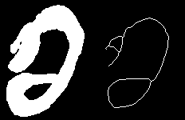 |
| 0: White (Background), 255: Black |
| 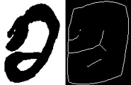 |
In ImageJ, the Black background option in defines not only how new binary images will be created (see 21: Creating Binary Masks↑) but also how previously created images are interpreted. This means object(s) will be inferred on a image-per-image basis. As such, inverting the LUT (see Invert LUT↑) of a binary image without updating the Black background option may lead to unexpected results, such as the aberrant thinning operation () depicted here. This issue can be avoided by imposing adequate preferences at startup, as described in Settings and Preferences↑.
You can use the dialog to assess the impact of the Black background option: Create a binary image, choose an operation from the Do drop-down menu, activate the preview feature and toggle the Black background checkbox.
29.9
The commands in this submenu add (subtract, multiply, etc.) a constant to each pixel in the active image or selection. A ‘Preview’ option is available for most operations.
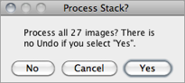
With stacks, the dialog depicted on the left is displayed. Choose ‘Yes’ to process entire stack or ‘No’ to process only the active slice. The dialog is not displayed if Hide "Process Stack?" dialog is checked in
29.9.1
Adds a constant to the image or selection. With 8-bit images, results greater than 255 are set to 255. With 16-bit signed images, results greater than 65,535 are set to 65,535.
29.9.2
Subtracts a constant from the image or selection. With 8-bit and 16-bit images, results less than 0 are set to 0.
29.9.3
Multiplies the image or selection by the specified real constant. With 8-bit images, results greater than 255 are set to 255. With 16-bit signed images, results greater than 65, 535 are set to 65, 535.
29.9.4
Divides the image or selection by the specified real constant. Except for 32-bit (float) images, attempts to divide by zero are ignored. With 32-bit images, dividing by zero results in Infinity, -Infinity or NaN (0/0) pixels when the source pixels are positive, negative or zero. The divide-by-zero value can be redefined using .
29.9.5
Does a bitwise AND of the image and the specified binary constant.
29.9.6
Does a bitwise OR of the image and the specified binary constant.
29.9.7
Does a bitwise XOR of the image and the specified binary constant.
29.9.8
Pixels in the image with a value less than the specified constant are replaced by the constant.
29.9.9
Pixels in the image with a value greater than the specified constant are replaced by the constant.
29.9.10
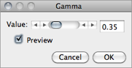
Applies the function f(p) = (p⁄255)γ × 255 to each pixel (p) in the image or selection, where 0.1 ≤ γ ≤ 5.0. For RGB images, this function is applied to all three color channels. For 16-bit images, the image min and max are used for scaling instead of 255.
GammaCorrectionTool macro
29.9.11
Fills the image or selection with the specified value.
29.9.12
For 8-bit images, applies the function f(p) = ln(p) × 255 ⁄ ln(255) to each pixel (p) in the image or selection. For RGB images, this function is applied to all three color channels. For 16-bit images, the image min and max are used for scaling instead of 255. For float images, no scaling is done. To calculate log10 of the image, multiply the result of this operation by 0.4343 (1 ⁄ ln(10)).
29.9.13
Performs an exponential transform on the active image or selection.
29.9.14
Performs a square transform on the active image or selection.
29.9.15
Performs a square root transform on the active image or selection.
29.9.16
Generates the reciprocal (multiplicative inverse) of the active image or selection, transforming each pixel (p) into 1⁄p. Requires 32-bit float images (see Image Types and Formats↑).
29.9.17
Sets non-thresholded pixels in 32-bit float images to the NaN (Not a Number) value. For float images, the Apply option in runs this command.
Pixels with a value of Float.NaN (0f/0f), Float.POSITIVE_INFINITY (1f/0f) or Float. NEGATIVE_INFINITY (-1f/0f) are ignored when making measurements on 32-bit float images.
29.9.18
Generates the absolute value of the active image or selection. Works only with 32-bit float or signed 16-bit image images.
29.9.19
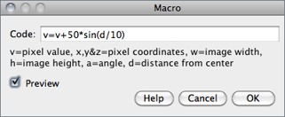
This command performs image arithmetic using an expression specified by the user [32]. It can be used to create fully-synthetic images or to perform precise pixel manipulations on existing images. The MathMacroDemo macro demonstrates the usage of this command.
Expression plugin
29.10
The commands in this submenu support frequency domain display, editing and processing. They are based on an implementation of the 2D Fast Hartley Transform (FHT[?]) contributed by Arlo Reeves, the author of the ImageFFT, spinoff of NIH Image [I] [I] Although outdated, the ImageFFT documentation summarizes important frequency domain methodologies.. 3D FHT can be performed using Bob Dougherty’s 3D Fast Hartley Transform plugin.
The frequency domain image is stored as 32-bit float FHT attached to the 8-bit image that displays the power spectrum. Commands in this submenu, such as Inverse FFT, operate on the 32-bit FHT, not on the 8-bit power spectrum. All other ImageJ commands only ‘see’ the power spectrum.
Two FFT dedicated tutorials are available on the ImageJ website: FFT Measurements and FFT Filtering.
29.10.1
Computes the Fourier transform[?] and displays the power spectrum. Polar coordinates of measured point selections are recorded by .
If the mouse is over an active frequency domain (FFT) window, its location is displayed in polar coordinates. The angle is expressed in degrees, while the radius is expressed in pixels per cycle (p/c[?]). The radius is expressed in [units] per cycle (e.g. mm/c) if the spatial scale of the image was defined using or
29.10.2
Computes the inverse Fourier transform. You can filter or mask spots on the transformed (frequency domain) image and do an inverse transform to produce an image which only contains the frequencies selected or which suppresses the frequencies selected. Use ImageJ’s selection tools and fill / clear commands to draw black or white areas that mask portions of the transformed image. Black areas (pixel value = 0) cause the corresponding frequencies to be filtered (removed) and white areas (pixel value = 255) cause the corresponding frequencies to be passed. It is not, however, possible to both filter and pass during the same inverse transform.
Note that areas to be filtered in the frequency domain image must be zero filled and areas to be passed must be filled with 255. You can verify that this is the case by moving the cursor over a filled area and observing that the values displayed in the status bar are either 0 or 255. Thus, you should always confirm that masked areas are not some other gray value, by using the black & white reset option in the Color Picker window↑ widgets when defining foreground () and background () colors.
With off-center selections, the same spatial frequency appears twice in the power spectrum, at points opposite from the center. It is sufficient to fill / clear only one of these.
29.10.3
Recomputes the power spectrum from the frequency domain image (32-bit FHT). This command allows you to start over after mis-editing the 8-bit power spectrum image.
29.10.4
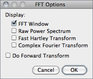
Displays the FFT Options dialog box. The first group of checkboxes specifies which image(s) are created by the FFT command:
Display FFT Window The standard output. It consists of an 8-bit image of the power spectrum and the actual data, which remain invisible for the user. The power spectrum image is displayed with logarithmic scaling, enhancing the visibility of components that are weakly visible. The actual data are used for the Inverse FFT command.
Display Raw Power Spectrum The power spectrum without logarithmic scaling.
Display Fast Hartley Transform The internal format used by the command, which is based on a Hartley transform rather than Fourier transform.
Display Complex Fourier Transform A stack with two slices for the real and imaginary parts of the FFT.
Do Forward Transform If checked, the current image is transformed immediately when closing the FFT Options dialog.
29.10.5
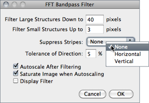
Removes high spatial frequencies (blurring the image) and low spatial frequencies (similar to subtracting a blurred image). It can also suppress horizontal or vertical stripes that were created by scanning an image line by line [33].
The Bandpass Filter uses a special algorithm to reduce edge artifacts (before the Fourier transform, the image is extended in size by attaching mirrored copies of image parts outside the original image, thus no jumps occur at the edges).
Filter Large Structures Down to Smooth variations of the image with typical sizes of bright or dark patches larger than this value are suppressed (background).
Filter Large Structures Up to Determines the amount of smoothing. Objects in the image smaller than this size are strongly attenuated. Note that these values are both half the spatial frequencies of the actual cutoff. The cutoff is very soft, so the bandpass will noticeably attenuate even spatial frequencies in the center of the bandpass unless the difference of the two values is large (say, more than a factor of 5 or so).
Suppress Stripes Select whether to eliminate Horizontal or Vertical stripes. Removal of horizontal stripes is similar to subtracting an image that is only blurred in the horizontal direction from the original.
Tolerance of Direction This is for Suppress Stripes; higher values remove shorter stripes and/or stripes that are running under an angle with respect to the horizontal (vertical) direction.
Autoscale After Filtering If checked, puts the lowest intensity to 0 and the highest intensity to 255, preserving all intensities.
Saturate Image when Autoscaling If checked, allows some intensities to go into saturation, and produces a better visual contrast. Saturate Image when Autoscaling only has an effect when Autoscale After Filtering is enabled.
Display Filter If checked, shows the filter generated. Note that this disables Undo of the filter operation on the original image.
29.10.6
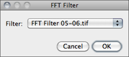
This command does Fourier space filtering of the active image using a user-supplied spatial domain (non-FFT) image as the filter.
This image will be converted to 8-bit. For pixels that have a value of 0, the corresponding spatial frequencies will be blocked. Pixel with values of 255 should be used for passing the respective spatial frequencies without attenuation. Note that the filter should be symmetric with respect to inversion of the center: Points that are opposite of the center point (defined as x = width ⁄ 2, y = height ⁄ 2) should have the same value. Otherwise, artifacts can occur. For some examples, see the FFTCustomFilterDemo and FFTRemoveStreaks macros.
29.10.7
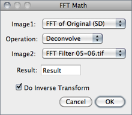
This command correlates, convolves or deconvolves two images.
It does this by converting Image1 and Image2 to the frequency domain, performing conjugate multiplication or division, then converting the result back to the space domain. These three operations in the frequency domain are equivalent to correlation, convolution and deconvolution in the space domain.
Refer to the DeconvolutionDemo and MotionBlurRemoval macros for examples.
29.10.8
| FFT | |
| Original | Swapped |
| 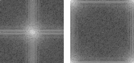 | |
| Non-FFT | |
| Original | Swapped |
| 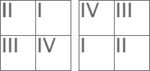 | |
This command transforms between the ‘user friendly’ display of Fourier transforms with the lowest frequencies at the center and the ‘native’ form with the lowest frequencies at the four corners.
swaps quadrants I with III and II with IV (counter-clockwise starting from ‘Northeast’) so that points near the center are moved towards the edge and vice versa. Another way to see this command is to imagine that the image is periodically repeated and the origin is shifted by width ⁄ 2 in x and by height ⁄ 2 in y direction.
For Fourier transforms, affects only the image displayed, not the actual FHT data. Therefore, editing an image with swapped quadrants for filtering or masking may lead to undesired results.
29.11
This submenu contains miscellaneous filters [36] (including those installed by the command).
More information on image filters can be obtained by looking up related keywords (convolution, Gaussian, median, mean, erode, dilate, unsharp, etc.) on the Hypermedia Image Processing Reference index.
29.11.1
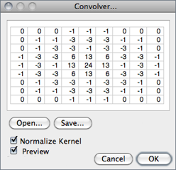
Does spatial convolution using a kernel entered into a text area.
A kernel is a matrix whose center corresponds to the source pixel and the other elements correspond to neighboring pixels. The destination pixel is calculated by multiplying each source pixel by its corresponding kernel coefficient and adding the results. If needed, the input image is effectively extended by duplicating edge pixels outward. There is no arbitrary limit to the size of the kernel but it must be square and have an odd width.
Rows in the text area must all have the same number of coefficients, the rows must be terminated with a carriage return, and the coefficients must be separated by one or more spaces. Kernels can be pasted into the text area using Ctrl V.
Checking Normalize Kernel causes each coefficient to be divided by the sum of the coefficients, preserving image brightness.
The kernel shown is a 9 × 9 “Mexican hat”, which does both smoothing and edge detection in one operation. Note that kernels can be saved as a text file by clicking on the ‘Save’ button, displayed as an image using , scaled to a reasonable size using and plotted using
ConvolutionDemo macro
29.11.2
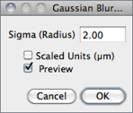
This filter uses convolution with a Gaussian function for smoothing [37].
Sigma is the radius of decay to e − 0.5 (≈61%), i.e., the standard deviation (σ) of the Gaussian (this is the same as in Adobe®Photoshop®, but different from ImageJ versions till 1.38q, in which radius was 2.5 × σ (cf. GaussianBlur.java).
Like all ImageJ convolution operations, it assumes that out-of-image pixels have a value equal to the nearest edge pixel. This gives higher weight to edge pixels than pixels inside the image, and higher weight to corner pixels than non-corner pixels at the edge. Thus, when smoothing with very high blur radius, the output will be dominated by the edge pixels and especially the corner pixels (in the extreme case, with a blur radius of e.g. 1020, the image will be replaced by the average of the four corner pixels).
For increased speed, except for small blur radii, the lines (rows or columns of the image) are downscaled before convolution and upscaled to their original length thereafter.
, Accurate Gaussian Blur plugin, AnimatedGaussianBlur macro
29.11.3
This command calculates a three dimensional (3D) gaussian lowpass filter using a 3-D Gaussian. It works with Stacks↑ and Hyperstacks↑ but not single-slice Color Composite Images↑. Refer to ↑ for more information on sigma values.
29.11.4
Reduces noise in the active image by replacing each pixel with the median of the neighboring pixel values.
29.11.5
Smooths the current image by replacing each pixel with the neighborhood mean.
29.11.6
This filter does grayscale erosion by replacing each pixel in the image with the smallest pixel value in that pixel’s neighborhood.
29.11.7
This filter does grayscale dilation by replacing each pixel in the image with the largest pixel value in that pixel’s neighborhood.
29.11.8
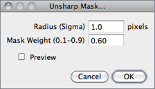
Sharpens and enhances edges by subtracting a blurred version of the image (the unsharp mask) from the original.
Unsharp masking subtracts a blurred copy of the image and rescales the image to obtain the same contrast of large (low-frequency) structures as in the input image. This is equivalent to adding a high-pass filtered image and thus sharpens the image.
Radius The standard deviation (σ blur radius, cf. ) of the Gaussian blur that is subtracted. Increasing the Gaussian blur radius will increase contrast.
Mask Weight Determines the strength of filtering, whereby MaskWeight = 1 would be an infinite weight of the high-pass filtered image that is added. Increasing the Mask Weight value will provide additional edge enhancement.
29.11.9
Highlights edges in the image by replacing each pixel with the neighborhood variance.
29.11.10
Generates a stack containing examples of the circular masks used by the , , , , and filters for various neighborhood sizes.
29.12
This submenu allows the execution of commands in a series of images without manual intervention.
commands are non-recursive, i.e., they are applied to all the images of the chosen Input folder but not its subfolders. Nevertheless a directory hierarchy can be transversed using ImageJ macro language (cf. BatchProcessFolders macro).
Three critical aspects to keep in mind when performing batch operations that modify processed images:
- Files can be easily overwritten since the batch processor will silently override existing files with the same name.
- The destination Output folder should have adequate disk space to receive the created images.
- In the case of non-native formats, batch operations will be influenced by the behavior of the reader plugin or library (cf. Non--native Formats ↑).
29.12.1
This command measures all the images in a user-specified folder, by running the command in all images of the chosen directory.
Note that measurements are performed on non thresholded images. In the case of TIFF images saved with active selections measurements are performed on the ROI and not the whole image.
,
29.12.2
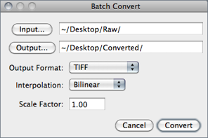
Batch converts and/or resizes multiple images from a specified folder.
Input... Selects the source folder containing the images to be processed.
Output... Selects the destination folder where the processed images will be stored.
Output Format Specifies the output format that can be set to TIFF, 8-bit TIFF, JPEG, GIF, PNG, PGM, BMP, FITS, Text Image, ZIP or Raw (cf. Image Types and Formats↑ and submenu).
Interpolation The resampling method to be used in case Scale Factor is not 1.00 (see and ). For better results, Average when downsizing is automatically selected when scaling down images.
Scale Factor Specifies if images should be resized (see ).
29.12.3
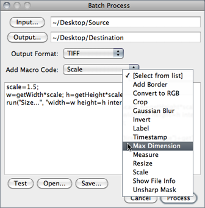
Runs a macro over a specified folder. The last used macro is stored in the /ImageJ/macros/batchmacro.ijm file and remembered across restarts..
Input... Selects the source folder containing the images to be processed.
Output... Selects the destination folder where the processed images will be stored. Note that original files will not be saved if this field is left empty.
Output Format Specifies the output format that can be set to TIFF, 8-bit TIFF, JPEG, GIF, PNG, PGM, BMP, FITS, Text Image, ZIP or Raw (cf. Image Types and Formats↑ and submenu).
Add Macro Code This drop-down menu contains macro snippets that can be combined to create the processing macro. Other statements can be pasted from the macro recorder or ImageJ’s editor while the dialog box is opened [38]. Previously written macros can be imported using Open… When editing the macro beware of any statements that may interfere with the normal operation of the batch processor (such as Close() or Open() calls).
Test Tests the macro on the first image of the Input… folder (the processed image will be displayed).
Open… Imports previously written macros.
Save… Saves the assembled macro.
,
29.12.4
This command, that shares the same interface of (cf. BatchProcesser.java), allows virtual stack manipulations. E.g., Cropping a virtual stack can be performed by executing the following steps:
- Open a virtual stack
- Run
- Select an Output folder and Output format
- Select ‘Crop’ from the Add Macro Code drop-down menu
- Edit the macro code as needed and press the Test button to verify the macro
- Click Process to create the cropped virtual stack
Note that cropped images are not loaded into memory but are saved to disk as they are cropped (see Virtual Stacks↑).
29.13

Performs arithmetic and logical operations between two images selected from popup menus described in the Image operations↓ table. Image1 or both Image1 and Image2 can be stacks. If both are stacks, they must have the same number of slices. Image1 and Image2 do not have to be the same data type or the same size.
With 32-bit (float) images, pixels resulting from division by zero are set to Infinity, or to NaN (Not a Number) if a zero pixel is divided by zero. The divide-by-zero value can be redefined in
Operation Selects one of the thirteen available operators (see Image operations↓).
Create New Window If checked, a new image is created to hold the result. If unchecked, the result of the operation is applied directly to Image1.
32-bit (float) Result If checked, source images will be converted to 32-bit floating point before performing the operation.
Table 6 operations. On these examples source and destination images (8-bit grayscale) are displayed with inverted LUTs (White = 0; Black = 255) (cf. submenu). Note that calculations between images can also be performed using copy and paste and the command.
| Source image (img1): |  |
Destination image (img2): |  |
| Operator | Result | Operator | Result |
| Add: img1 = img1 + img2 |  |
Min: img1 = min(img1, img2) |  |
| Subtract: img1 = img1 − img2 |  |
Max: img1 = max(img1, img2) | |
| Multiply: img1 = img1 × img2 | Average: img1 = (img1 + img2) ⁄ 2 | 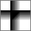 | |
| Divide: img1 = img1÷img2 | Difference: img1 = |img1 − img2| |  |
|
| AND: img1 = img1∧img2 |  |
Copy: img1 = img2 | |
| OR: img1 = img1∨img2 | Transparent--zero |  |
|
| XOR: img1 = img1⊕img2 | |||
Calculator Plus plugin
29.14
Removes smooth continuous backgrounds from gels and other images [39]. Based on the concept of the ‘rolling ball’ algorithm described in Sternberg Stanley, Biomedical image processing, IEEE Computer, Jan 1983). Imagine that the 2D grayscale image has a third dimension (height) by the image value at every point in the image, creating a surface. A ball of given radius is rolled over the bottom side of this surface; the hull of the volume reachable by the ball is the background to be subtracted.
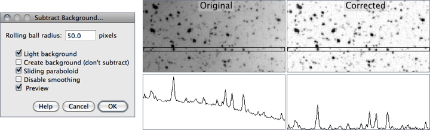
Figure 35 ProcessSubtract Background…↑ This command uses a ‘sliding paraboloid’ or a legacy ‘rolling ball’ algorithm that can be used to correct uneven illuminated background as shown in the profiles (Analyze↓) below each image. Rolling ball radius should be set to at least the size of the largest object that is not part of the background.
Rolling Ball Radius The radius of curvature of the paraboloid. As a rule of thumb, for 8-bit or RGB images it should be at least as large as the radius of the largest object in the image that is not part of the background. Larger values will also work unless the background of the image is too uneven. For 16-bit and 32-bit images with pixel value ranges different from 0--255, the radius should be inversely proportional to the pixel value range (e.g., for 16-bit images (pixel values 0--65535), typical values of the radius are around 0.2 to 5).
Light Background Allows the processing of images with bright background and dark objects.
Separate Colors (RGB images only) If unchecked, the operation will only affect the brightness, leaving the hue and saturation untouched.
Create Background (Don’t Subtract) If checked, the output is not the image with the background subtracted but rather the background itself. This option is useful for examining the background created (in conjunction with the Preview option). Create Background can be also used for custom background subtraction algorithms where the image is duplicated and filtered (e.g. removing ‘holes’ in the background) before creating the background and finally subtracting it with
Sliding Paraboloid If checked, the ‘rolling ball’ is replaced by a paraboloid that has the same curvature at the apex as a ball of that radius. This option allows any value of the radius > 0.0001 (the ‘rolling ball’ algorithm requires a radius of at least 1). The ‘sliding paraboloid’ typically produces more reliable corrections since the ‘rolling ball’, a legacy algorithm (only kept for backward compatibility), is prone to edge artifacts.
To reduce the computing time the ‘rolling ball’ algorithm downscales the image in a inconsistent way. The ‘sliding paraboloid’ algorithm does not use downscaling and thus produces no downscaling artifacts. Nevertheless, the ‘sliding paraboloid’ is also an approximation, since it does not use a de facto paraboloid (an exact implementation would require a great computing effort) but it rather slides parabolae in different directions over the image.
To reduce the computing time the ‘rolling ball’ algorithm downscales the image in a inconsistent way. The ‘sliding paraboloid’ algorithm does not use downscaling and thus produces no downscaling artifacts. Nevertheless, the ‘sliding paraboloid’ is also an approximation, since it does not use a de facto paraboloid (an exact implementation would require a great computing effort) but it rather slides parabolae in different directions over the image.
Disable Smoothing For calculating the background (‘rolling the ball’), images are maximum-filtered (3 × 3 pixels) to remove outliers such as dust and then smoothed to reduce noise (average over (3 × 3 pixels). With Disable Smoothing checked, the unmodified image data are used for creating the background. Check this option to make sure that the image data after subtraction will never be below the background.
How to correct background illumination in brightfield microscopy by G. Landini, Auto Local Threshold, command’s source code, Rolling Ball Background Subtraction (the plugin that implemented this command in versions up to 1.39e)
29.15
Reruns the previous command. The and commands are skipped.